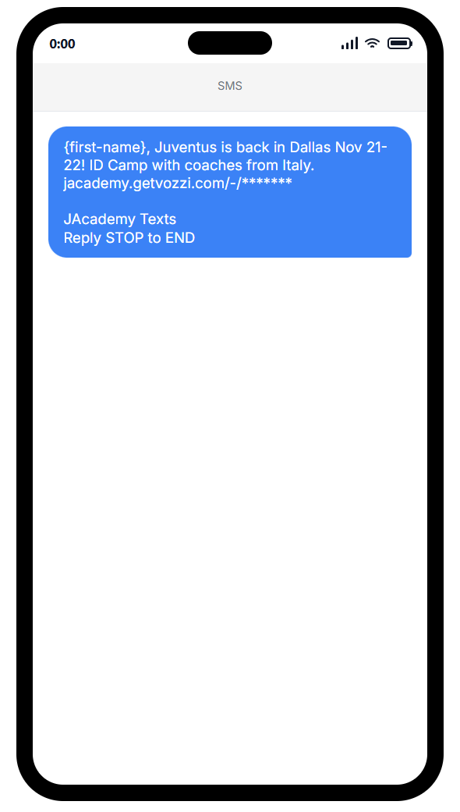
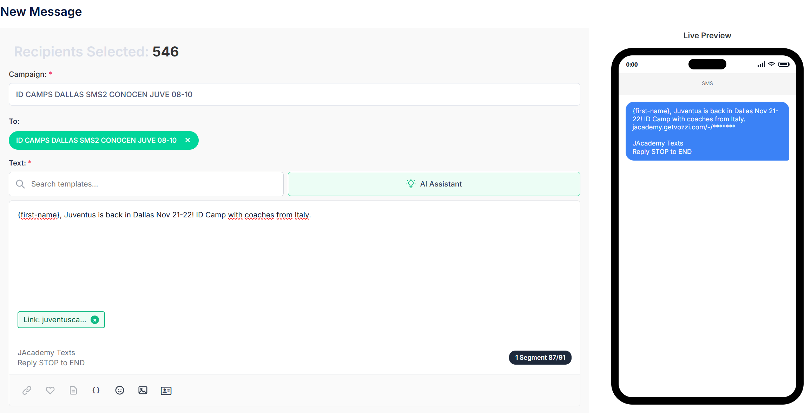
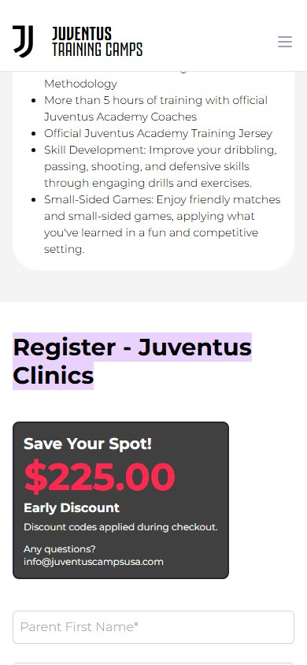

Cómo se ve
Capturas del borrador en Vozzi. Donde dice {first-name}, cada familia ve su propio nombre. El enlace corto (jacademy.getvozzi.com/-/…) lo genera Vozzi al enviar y cuenta los clics.


El mensaje
Texto que se envía
JAcademy Texts
Reply STOP to ENDEjemplo: "Jennifer, Juventus is back in Dallas Nov 21-22! ID Camp with coaches from Italy."
Traducción
JAcademy Texts
Responde STOP para no recibir más
- "Is back" le habla a quien ya conoce Juventus, que es justo este público.
- Empieza por el nombre de la familia y lleva la ciudad y la fecha al inicio: en el Email 1 ganó el asunto con ciudad y fecha (22,3 % de apertura frente a 17,4 %).
- Sin precio, sin urgencia, sin tildes ni emojis. Cabe en un solo SMS: los de un segmento tienen 15,8 % de clic en la cuenta, frente a 10,2 % los de dos.
- El pie "JAcademy Texts · Reply STOP to END" lo agrega Vozzi en todos los envíos, como exige la ley.
A quién se envía y de dónde salen
Son familias que ya se inscribieron con Juventus en Dallas en años anteriores. Salen de la plataforma de registro de Juventus Camps USA y de las clínicas (2024–2026); no es una lista comprada.
| Grupo | Qué hizo | Familias |
|---|---|---|
| Pagaron antes | Inscribieron a su hijo en un camp o clínica de Dallas y pagaron | 266 |
| Registro sin pago | Empezaron la inscripción de un camp o clínica de Dallas y no la terminaron | 282 |
| Descartados por Vozzi | Números no válidos o dados de baja | −2 |
| Total | 546 |
Cómo se armó la lista:
- Base de inscritos 2024–2026 de la plataforma de registro (la misma que se usa en Meta como lista de clientes).
- Cruce con Constant Contact y Vozzi por correo y teléfono, para tener una sola ficha por familia y un teléfono apto para SMS. Quien respondió STOP en el pasado queda fuera.
- Zona de Dallas: por el código de área del teléfono (214, 469, 972, 945, 817 y 682), la ciudad del registro y el nombre de la lista (Dallas 2024, Dallas 2025).
- Sin repetir: se retiran las familias que ya tienen registro en Dallas 2026-27, pagado o no (4), y los duplicados.
La lista con nombres y teléfonos es privada y no se publica.
Por qué a ellas y por qué mañana
Por qué a estas familias
- Mayor intención de toda la base: las que pagaron ya confiaron una vez; las que no terminaron el registro mostraron un interés concreto.
- El SMS les llega mejor que el email: en Vozzi los SMS con enlace promedian cerca de 15 % de clic, frente a menos de 1 % del email masivo. El Email 1 de Dallas tuvo 0,6 % de clic y 4,3 % de rebotes por correos antiguos.
- Es el paso que sigue en el plan de Dallas: el Email 1 fue a toda la zona (1.020 correos) el 7-oct; este SMS va solo a quienes ya tienen relación con Juventus. Los demás contactos de la zona reciben su SMS el 3-nov.
Por qué el jueves a las 12:30 pm
- Histórico de la cuenta (46 SMS con enlace, hora de Dallas): de 11 am a 2 pm, 21,9 % de clic típico; de 5 a 8 pm, 26,9 %; de 8 a 11 am, 16,8 %. El mediodía es la mejor franja diurna y las bajas son iguales a cualquier hora (alrededor de 1 %).
- Día: jueves, entre semana, con el email del miércoles todavía reciente.
- Tiempo: quedan 6 semanas para el camp. Dallas lleva 5 niños pagados (Chicago, 28); en 2024 llegó a 51 y en 2025 a 17.
A dónde lleva el enlace
El enlace abre la página de Dallas directamente en la sección de registro y pago ("Register – Juventus Clinics"), sin bajar unas 4 pantallas en el celular. Lleva la etiqueta utm_content=dal_sms2 para medir las visitas que vienen de este mensaje.

Qué se va a medir
- Entregados, clics y bajas en Vozzi.
- Cuántas de las 546 familias se registran o pagan Dallas 2026-27 después del mensaje (cruce privado con la plataforma, solo conteos).
- Respuestas de las familias en Vozzi: se contestan el mismo día.
- Los resultados se publican en el informe de Email y SMS.